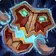
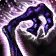

Priest Racials

Loa's Blessing:

 Balance Changes
Balance Changes


New Spells and Abilities

Shadowfiend is now trainable at level 60:
 Hero's Journey
Hero's Journey
labels the expansion Blizzard made that change. labels an idea Blizzard made during SoD. labels a new idea I came up with.
labels an idea Blizzard made during SoD. labels a new idea I came up with.